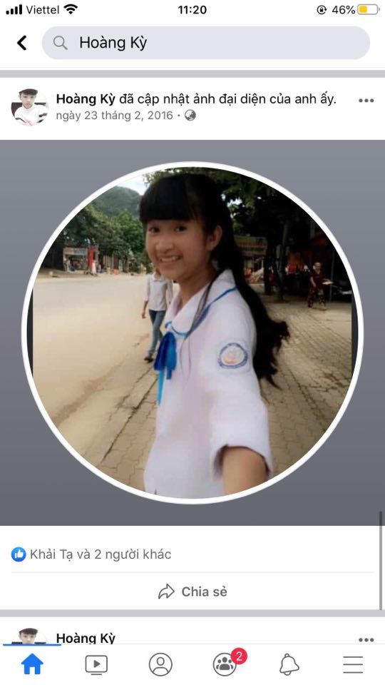
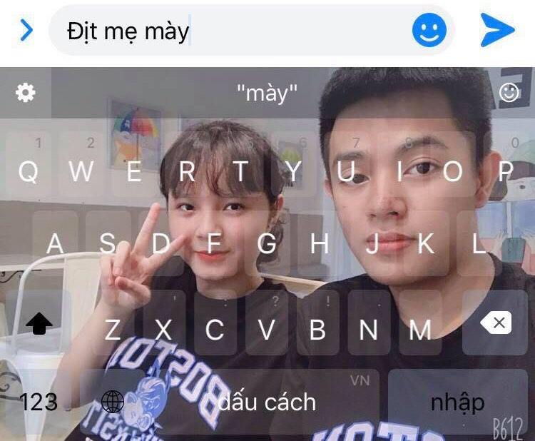

Lời tâm sự của một dân chơi...
”Tôi cảm thấy rất nhớ những người yêu cũ của tôi và đôi lúc tôi thường hành động điên rồ như: rạch tay, chửi thề... Để mà rồi máu thì mất, miệng thì hôi như lỗ đít của mấy thằng bạn thân mà chẳng nhận lại được điều gì ấm áp. Đã có những lúc tôi cảm thấy cuộc sống của tôi có quá nhiều phiền muộn, đã những lúc tôi cảm thấy cuộc sống của tôi bế tắc, đen tối mà không lối thoát nhưng rồi mấy thằng bạn lại tạo lên mấy nguồn sáng cho tôi để tôi theo đuổi. Chúng ló luôn gạ gẫm tôi chạy theo những tia sáng đó để rồi chính cái lũ khốn nạn đầu buồi đít thì hôi mà mồm thì bốc mùi như con cú ấy lại chính là người cover lại những cái bài giảng của Ngô Tất Tố mà dập tắt đi những nguồn sáng lé loi còn sót lại ấy. Con tim tôi trở nên tan nát, con tim tôi được hàn gắn thêm vài vết sẹo mà trở nên to ra giống như cái lồn của mấy con phò trên Phạm Văn Đồng. Từ đó mà tôi đã nhận ra rằng “bạn thân” thì cũng chỉ là cái từ để chỉ những kẻ chuyên đi dập tắt hạnh phúc của người khác mà thôi...,,
- Gẻ hắc cơ -
Ảnh anh Gẻ bồi hồi chia sẻ
Những người yêu cũ đáng nhớ...
-

Hà Anh
Là mối tình đầu trong cuộc đời, ngoài những pha bỏ nhà ra đi, cắt máu ăn thề thì đây cũng là người khiến Gẻ bất chấp tất cả để rồi đéo nhận lại được gì. Từ cái lần chia tay đó mà Gẻ mới thấy cuộc đời nó nghiệt ngã đến như thế nào. Là mối tình dai dẳng mà cũng phải nói là sóng gió nhất của cuộc đời anh Gẻ, vì tương lai tốt đẹp mà Hà Anh đã bỏ Gẻ lại phía sau mảnh đất Cao Phong đầy nắng và gió để hướng tới cuộc sống tươi đẹp chốn thành thị. Thật sự thì đến bây giờ Gẻ vẫn còn nhung nhớ người yêu đầu tiên của mình.
-

Memmemmem
Người thứ 2 Gẻ yêu trong cuộc đời, vì bạn bè thử thách mà Gẻ đá không thương tiếc. Gẻ thấy mình rất vô tâm khi làm điều đó nhưng vì tương lai tươi đẹp của em ấy nên phải bỏ đi mối tình đang dang dở ở phía sau. Gẻ nhận ra rằng vì người mình yêu mà mình có thể làm bất cứ điều gì, kẻ cả khi phải rời xa người mình yêu mãi mãi để em ấy không sa vào những cạm bẫy nguy hiểm của mấy thằng “bạn thân”. Nhưng Gẻ cũng nhận ra rằng tình yêu cũng là một thứ gì đó rất là phũ phàng nếu bạn không đủ khả năng để chấp nhận sự thật bởi vì sau khi bị đá Memmemmem đã gạt Gẻ sang một bên rồi bỏ đi không để lại tin nhắn gì mà không hiểu được ẩn ý sâu xa từ hành động của Gẻ.
-

Phương Nguyễn
Là người thứ 3 Gẻ yêu sau cái vẫy tay inbox, nhưng một phần cũng do bạn bè rình rập những cuộc thậm thụt mà kết cục cũng chẳng đi tới đâu. Gẻ cũng 1 phần vì muốn tốt cho em ấy nên đành liều lĩnh bất chấp bản thân mà lăng mạ bạn bè để rồi tất cả cũng lại quay về con số 0. Em ấy cũng hiểu được giá trị phần nào từ những trò đùa quá trớn tạo ra từ những thằng bạn thân của Gẻ chỉ là những thử thách để đưa hai người tiến lại gần nhau hơn, nhưng vì tiền bạc và danh vọng mà em ấy đành phải chối từ Gẻ khi bị Gẻ bắt gặp tại nhà nghỉ. Sau cái lần bắt quả tang mà không để lại được một hành động tốt đẹp nào của Gẻ, tinh thần của anh giờ đây đã suy sụp hoàn toàn, Gẻ trùm chăn đêm đêm chơi ĐTCL với mấy thằng bạn thân còn ban ngày thì ngủ chương buồi ra cha mẹ gọi dậy cũng chằng thèm ăn cơm. Đáng tiếc là em ấy đã hoàn toàn thấy được ẩn ý đằng sau những việc làm của Gẻ nhưng vì tiền và danh mà phản bội Gẻ. Gẻ đã cắt máu ăn thề với bạn với bè là sẽ không yêu bất cứ một ai nữa mặc dù trái tim của anh đã nứt rạn ra từ khi nào không hay…
Nhìn nhận của người ngoài cuộc...
Cảm xúc của cụ ông hơn 70 tuổi nói về vấn đề rạch tay.
“Tôi năm nay hơn 70 tuổi mà chưa thấy cái trường hợp "rạch tay" nào nó như thế này cả, chứ phải tôi là tôi đấm cho gãy răng.,,
- Nguyễn Hữu Đa -
Cảm xúc của cụ ông hơn 70 tuổi nói về vấn đề rạch tay
“Xã hội này chỉ có tán, chịu yêu, cần cù thì bù siêng năng. Chỉ có tán thì mới có ăn. Những cái loại không tán mà đòi có ăn thì ăn ĐẦU BUỒI, ăn CỨT.,,
- Huấn Hoa Hồng -